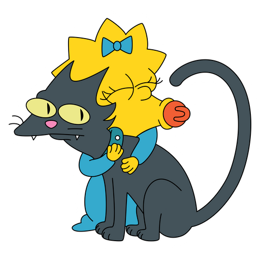

a filha mais nova, de apenas 1 ano. Apenas fica com a sua chupeta, porém assume papel decisivo em alguns episódios como em "Quem Matou o Sr. Burns" na qual "acidentalmente" atirou no Sr. Burns. No episódio "Poppa's Got a Brand New Badge", entretanto, demonstra formidável perícia ao por fora de ação com um rifle um grupo de mafiosos que ameaçavam seu pai. Posteriormente esconde a arma em seu berço.
Maggie é a filha mais nova de Homer e Marge , e a irmã mais nova de Bart e Lisa . Ela é muitas vezes vista chupando sua chupeta laranja e, quando ela anda, ela tropeça em sua roupa e cai de cara (essa mordaça é muito mais usada nas temporadas anteriores). Sendo uma criança, ela ainda não aprendeu a falar. No entanto, ela apareceu para falar no primeiro curta de Tracey Ullman Show . Embora ela raramente fale, ela frequentemente faz um barulho característico de sucção com sua chupeta, que se tornou sinônimo da personagem. Seus ruídos de sucção de chupeta são fornecidos pelo criador do programa, Matt Groening , e pelo produtor inicial Gábor Csupó . As falas ocasionais de Maggie e outras vocalizações são atualmente fornecidas por Nancy Cartwright , mas ela também foi dublada pelas estrelas convidadas Carol Kane , James Earl Jones , Elizabeth Taylor e Jodie Foster , e pelos regulares da série Yeardley Smith e Harry Shearer . Maggie apareceu em várias mídias relacionadas aos Simpsons – incluindo videogames, The Simpsons Movie , The Simpsons Ride , comerciais e histórias em quadrinhos – e inspirou toda uma linha de mercadorias.
